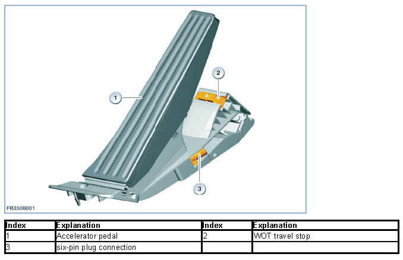
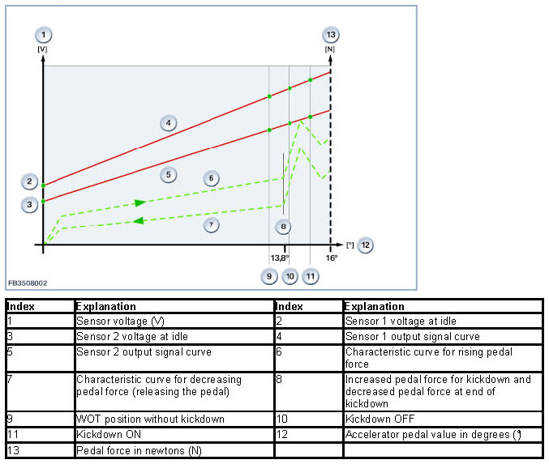
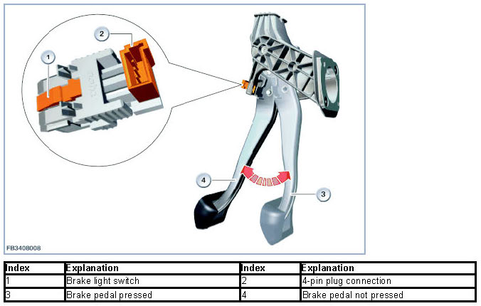
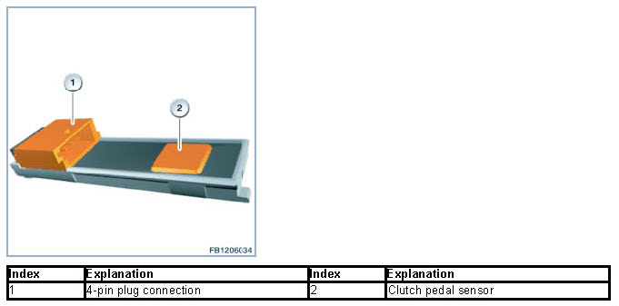
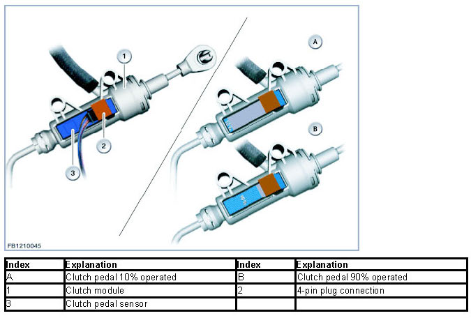
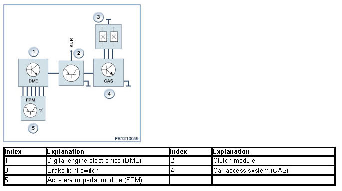

Foot Pedal
Foot Pedal
Foot pedal
The Digital Engine Electronics (DME) require various input signals for the engine functions.
For example, the driver's choice to accelerate or decelerate is picked up at the foot pedals.
Brief component description
The following components of the pedal mechanism are described:
- Accelerator pedal module
- Brake lamp switch
- Clutch module.
Accelerator pedal module
The accelerator pedal module (FPM) picks up the pedal position. This leads to the transfer of the driver's choice to accelerate in the form of an electrical signal to the Digital Engine Electronics (DME).
Accelerator pedal position is monitored separately by 2 individual sensors. Two sensors are employed to provide redundancy, implement the monitoring function and facilitate recognition of malfunctions.
The accelerator pedal travel is detected by the sensors as an angle and output directly to the Digital Engine Electronics system (DME) as an analogue, linear signal. The total mechanically feasible operating travel of the accelerator pedal is 16° ± 0.5°.
Each change to the accelerator pedal position is sent to the engine control system within a maximum of 50 milliseconds Digital Engine Electronics (DME). Sensor signals are transmitted in analogue form. The Digital Engine Electronics (DME) monitors the two input signals of the sensors and compares them for plausibility (e.g. synchronization, linearity).

The accelerator pedal is returned on closure of the throttle by means of spring elements.
The following characteristic curve represents the voltage curve depending on the pedal sensor position of an accelerator pedal module with kickdown switch.

Start of kickdown phase: The detent position at which increased pedal force is required lies between a maximum of 13.8° and a minimum of 1.6° before the mechanical travel stop. On the characteristic curve for rising pedal force, the threshold value for kickdown ON must lie immediately after the maximum pedal force for kickdown.
End of kickdown phase: The final position for increased pedal force occurs 1.6° before the mechanical travel stop at the earliest and 13.8° before it is reached at the latest. On the characteristic curve for falling pedal force, the threshold value for kickdown OFF must lie immediately after the maximum pedal force.
Voltage values: The accelerator pedal values of the two sensors are percentages related to the power supply.
Sensor 1: At idle speed, the value is 15% of the power supply; at the end stop approx. 90%.
Sensor 2: At idle speed, the value is 7.5% of the power supply; at the end stop approx. 45%.
Brake light switch
Two Hall effect sensors as switches are installed in the brake light switch:
- Brake lamp switch
- Brake light test switch (redundancy).
The signals indicate whether the brake pedal has been pressed. The data interchange is digital.
The brake-light switch has no moving parts and works as a non-contact switch. A change in the switching state is achieved by removing or applying a ferromagnetic trigger element to the brake pedal.
Switching mode with brake not applied:
- Brake light switch output conductive
- Brake light test switch output blocking.

The two redundant signals from the brake light switch are forwarded for example to the Digital Engine Electronics (DME).
The signals from the brake light switch are also evaluated for the following functions:
- Reversing lamps
- Brake intervention.
Clutch module
On vehicles with manual gearboxes, the clutch module at the clutch pedal picks up the clutch position:
- Clutch pressed: clutch switch open
- Clutch not pressed: clutch switch closed.
The clutch module comprises the clutch switch and evaluation electronics.

Among other things, the Digital Engine Electronics (DME) has a signal line. When the clutch pedal is not pressed, the clutch module delivers 12 Volts and when the clutch pedal is pressed it delivers 0 Volts.
The clutch module is used as an input signal for the automatic engine start-stop. Two states are picked up:
- 10 percent operated
- 90 percent operated.

System overview

Notes for Service department
Latch mechanism for brake light switch
On replacement of the brake light switch, make sure the latch mechanism is properly engaged in order to ensure the functionality.
We can assume no liability for printing errors or inaccuracies in this document and reserve the right to introduce technical modifications at any time.